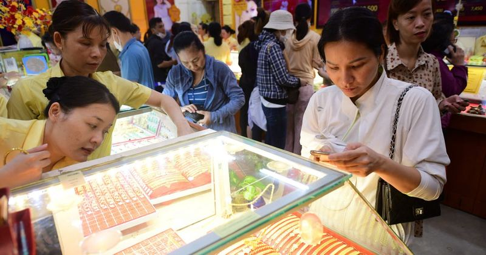

⚡Đọc nhanh 8-7: Giá dầu bất ngờ tăng mạnh; chứng khoán Mỹ cùng giá vàng đi xuống
Giá vàng thế giới chịu áp lực điều chỉnh khi giá dầu tăng - Ảnh: QUANG ĐỊNH Giá dầu bật tăng, giá vàng quay đầu giảm - Giá dầu thế giới tăng mạnh trở lại sau khi Mỹ hủy giấy phép cho phép Iran bán dầu thô sau các vụ tấn